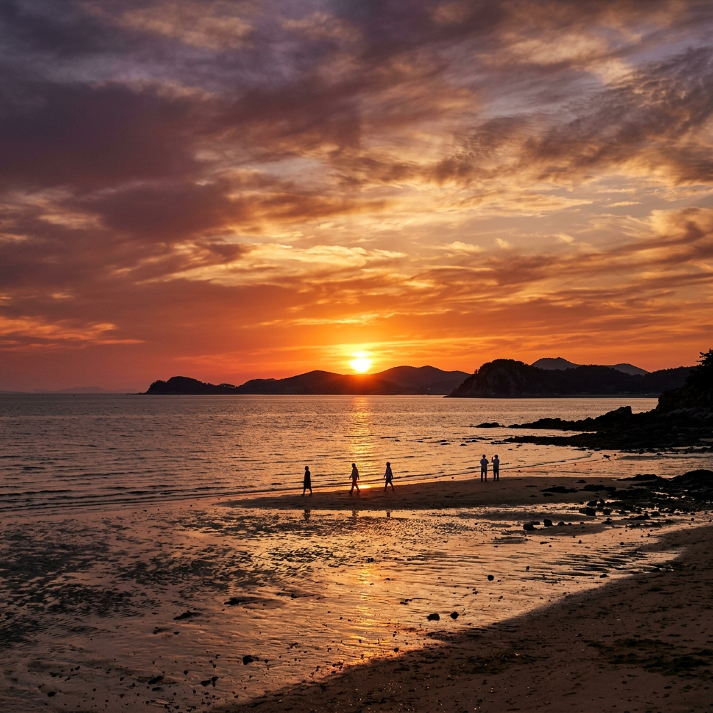
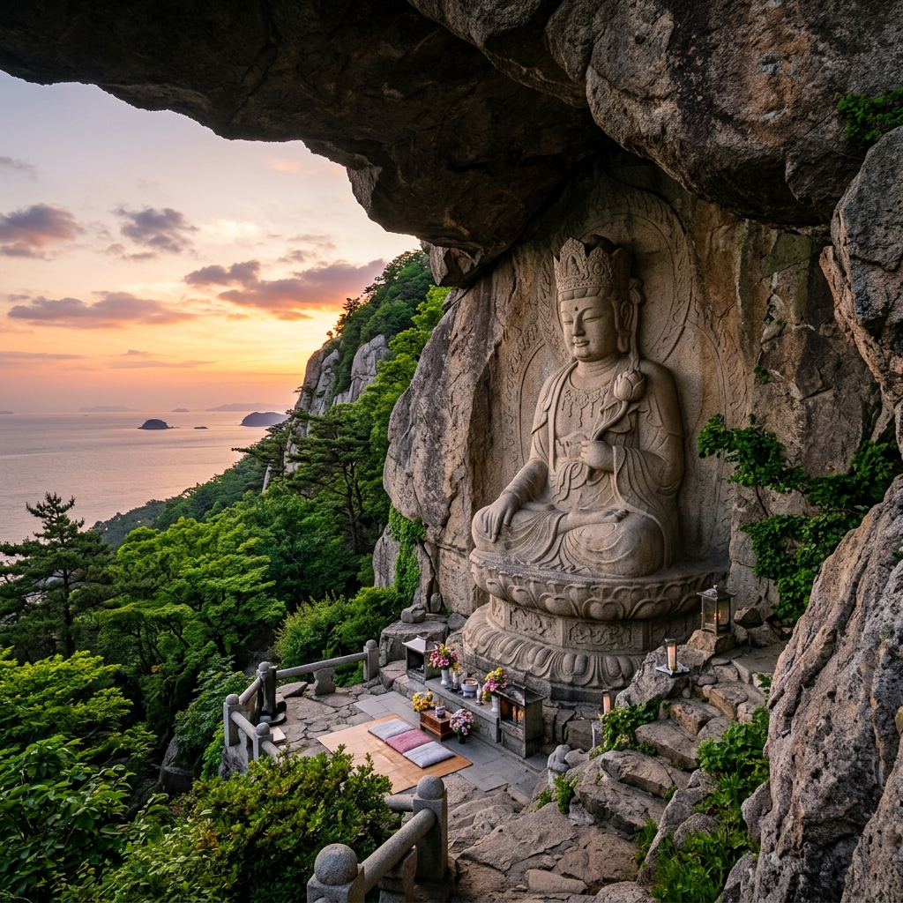
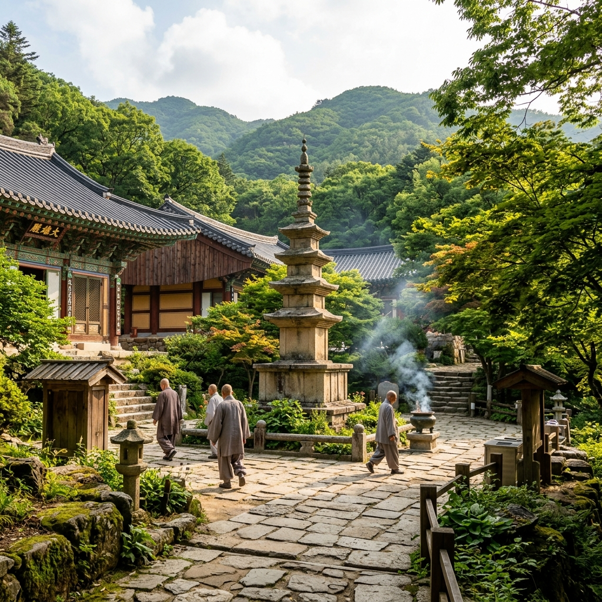

강화 석모도 6월 여행 — 민머루해변 낙조와 보문사 마애불 석양 코스
강화도 서쪽에 자리한 석모도는 수도권에서 가장 소박하고 고즈넉한 섬 여행지로 꼽힙니다. 2017년 석모대교가 개통되면서 배 없이도 자동차로 진입할 수 있게 되어 접근성이 크게 개선됐지만, 여전히 사람이 붐비지 않아 6월 주말 당일치기로 안성맞춤입니다. 서해 최고의 낙조 명소로 꼽히는 민머루해변과 강화도 3대 사찰 중 하나인 보문사, 거기에 노천 유황온천까지 하루 코스로 알차게 즐길 수 있는 섬입니다. 이 글에서는 석모도의 핵심 명소와 먹거리, 교통 정보를 꼼꼼히 정리해 드립니다.
01. 6월 석모도, 한적한 서해 섬 여행의 매력
석모도는 강화도의 부속 섬이지만 한반도 본토와 이어진 다리 덕분에 차량으로 진입할 수 있습니다. 수도권에서 1~1.5시간 거리임에도 불구하고 관광 인프라가 소박하게 유지되어 있어 "조용히 쉬다 오고 싶은 곳"을 찾는 여행자들에게 꾸준히 사랑받습니다.
6월은 장마 전의 맑은 날씨가 이어지고 기온도 쾌적해 해안 산책과 사찰 탐방에 최적입니다. 여름 피서철(7~8월)보다 훨씬 한산하면서도 풍경은 초록빛으로 가장 풍성한 시기가 바로 6월입니다. 해변에 인파가 없어 낙조 사진도 방해받지 않고 찍을 수 있습니다.
또한 6월 서해 일몰 시각은 오후 7시 40분~8시 이후로 매우 늦어, 오후 2~3시에 서울을 출발해도 여유 있게 낙조를 감상하고 돌아올 수 있습니다. 석모도 유황온천도 6월부터 성수기 준비를 마치고 시설이 정비되어 있어 방문 적기입니다.

석모도 민머루해변 서해 낙조 — 6월 황금빛 일몰 / AI 제작 이미지
02. 석모도 가는 법 — 석모대교와 교통 안내
석모대교는 강화도 외포리에서 석모도 석포리를 잇는 약 1.7km 교량입니다. 2017년 6월 개통 이후 과거 여객선을 타야만 진입할 수 있던 불편함이 해소됐습니다. 강화도까지는 서울 신촌, 홍대입구, 강남 등지에서 버스가 운행되며 강화버스터미널에서 석모도행 버스를 환승하거나 택시를 이용하면 됩니다.
자가용 이용 시 네비게이션에 '민머루해변' 또는 '석모도 보문사'를 목적지로 설정하면 석모대교를 경유하여 진입합니다. 서울 올림픽대로 기준 약 1시간 30분 소요됩니다. 주말 오전에는 강화도 내 도로가 다소 막힐 수 있으니 오전 일찍 출발하시길 권합니다.
섬 내 대중교통은 제한적이므로 자가용 방문이 훨씬 편리합니다. 석모도 내 주요 명소(민머루해변, 보문사, 온천)는 서로 차로 10~15분 거리에 있어 하루 동안 모두 둘러볼 수 있습니다.
03. 민머루해변 — 서해 최고의 낙조 명소
민머루해변은 석모도 남서쪽에 위치한 약 1km 길이의 완만한 모래사장입니다. 서해 특유의 너른 갯벌과 탁 트인 수평선이 어우러져 일몰 풍경이 특히 아름답습니다. 썰물 때에는 갯벌이 드러나며 붉게 물드는 하늘과 은색 갯벌이 반사되는 장면은 카메라를 들고 온 여행자라면 누구나 탄성을 자아내게 합니다.
6월 일몰 시각이 늦어 오후 5시 이후에도 여유롭게 해변을 거닐다가 낙조를 기다릴 수 있습니다. 해변 입구에는 소규모 카페와 횟집들이 줄지어 있어 커피 한 잔을 들고 낙조를 감상하는 여유를 즐길 수 있습니다. 물이 빠진 갯벌에서 조개나 낙지를 잡는 체험 프로그램을 진행하는 업체도 있으니 사전에 확인해보세요.
해변 주차장은 무료이며 수용 대수도 넉넉한 편입니다. 6월 평일이라면 차 한 대 없이 해변 전체를 독차지하는 경험도 가능합니다. 석양을 배경으로 사진을 찍을 때는 해가 지평선에 가까워지는 일몰 30분 전이 가장 색감이 풍부합니다.
04. 보문사 — 강화도 3대 사찰의 고즈넉함
보문사는 635년(신라 선덕여왕 4년)에 창건된 유서 깊은 사찰로, 낙산사(강원)·관음도량(경남)과 함께 우리나라 3대 관음성지 중 하나로 꼽힙니다. 석모도 북서쪽 낙가산 기슭에 자리 잡고 있으며, 입구에서 경내까지 이어지는 수령 수백 년 느티나무 숲길이 신성하고 그윽한 분위기를 자아냅니다.
경내에는 석실(굴) 안에 모셔진 22나한상이 있으며, 이 석실 법당은 원래의 천연 암굴을 그대로 활용한 것으로 다른 사찰에서 보기 힘든 독특한 풍경입니다. 석실 앞 오래된 향나무와 은행나무는 수령 700년이 넘어 천연기념물로 지정되어 있습니다.
보문사 입장료는 성인 기준 소정의 금액이 있으며, 방문 전 공식 홈페이지 또는 현장 안내판을 확인하시기 바랍니다. 사찰 경내에서는 조용하고 정중한 복장이 요구되며, 큰 소리와 뛰는 행동은 자제해 주세요.
05. 보문사 눈썹바위 — 마애석불좌상과 석양의 조화
보문사의 하이라이트는 경내에서 급경사 계단을 따라 약 15분 올라가야 만날 수 있는 마애석불좌상(눈썹바위 마애불)입니다. 거대한 암벽 아래 오목하게 파인 공간에 조각된 이 불상은 높이 약 9.2m로 눈썹처럼 생긴 바위(눈썹바위) 아래에 새겨져 있어 '눈썹바위 마애불'이라는 별칭으로도 불립니다.
1928년에 금강산 표훈사에서 모셔온 불상으로, 이후 정면을 향해 앉은 단아한 모습이 서해를 내려다보는 형상입니다. 마애불 앞 전망 공간에서 바라보는 서해 조망이 매우 인상적이며, 특히 일몰 무렵에는 붉게 물든 서해와 마애불이 함께 어우러지는 장관이 펼쳐집니다.
계단이 상당히 가파르고 계단 수가 많으므로 무릎이 좋지 않은 분들은 천천히 올라가시길 권합니다. 미끄럼 방지 신발과 충분한 수분 섭취를 준비하세요. 오르는 길에 보이는 석모도의 초록 숲과 서해 원경도 훌륭한 사진 포인트입니다.

보문사 눈썹바위 마애석불좌상 — 서해를 내려다보는 석불 / AI 제작 이미지
06. 석모도 온천 — 피부에 좋은 노천 유황온천
석모도를 더욱 특별하게 만드는 것이 바로 석모도 미네랄 온천입니다. 지하 해저 지층에서 솟아오르는 유황 성분의 미네랄 온천수로, 피부 미용에 좋다는 입소문 덕분에 여성 방문객에게 특히 인기입니다. 한려수도를 바라보며 즐기는 노천탕은 일반적인 온천과 달리 바다 향과 함께 피로를 풀 수 있어 특별한 경험을 선사합니다.
온천 시설은 노천탕, 실내탕, 찜질방 등으로 구성되어 있으며 수건·수영복 대여도 가능합니다. 운영 시간과 입욕료는 현장 또는 공식 홈페이지에서 확인하시기 바랍니다. 주말에는 이용객이 많을 수 있으니 평일 방문을 권장합니다.
민머루해변에서 낙조를 감상하고 보문사를 탐방한 후 온천으로 마무리하는 코스가 석모도 당일치기의 정석입니다. 온천 후 오는 피로 해소감과 피부의 매끈함이 여행의 여운을 더욱 오래 간직하게 해줍니다.
07. 석모도 먹거리 — 꽃게·밴댕이·젓갈
석모도와 강화도 일대는 서해 해산물의 보고입니다. 특히 6월은 꽃게 시즌이 이어지는 시기로, 찜이나 탕으로 즐기는 꽃게 요리가 일품입니다. 섬 내 식당들은 대부분 직접 잡은 싱싱한 해산물을 제공합니다.
밴댕이회는 강화도 특산물로, 5~6월에 잡히는 밴댕이를 얇게 썰어 초고추장에 찍어 먹으면 고소하고 담백한 맛이 납니다. 밴댕이 구이나 찜도 별미입니다. 젓갈 시장으로 유명한 강화 외포리는 석모도 입구 근처에 있어 방문 시 다양한 젓갈을 구매하기 좋습니다.
먹거리 가격은 계절과 시세에 따라 달라지므로 구체적인 단가보다는 식당마다 당일 가격판을 확인하시고 주문하세요. 해물탕이나 꽃게 요리 한 상에 2인 기준 3~5만 원 선으로 즐길 수 있는 곳이 많습니다.
08. 강화도 연계 코스 — 전등사·초지진
석모도에서 강화도 본섬으로 넘어오면 다양한 역사 유적을 연계할 수 있습니다. 전등사는 381년에 창건된 국내 가장 오래된 사찰 중 하나로, 고려 때 조선왕조실록을 보관했던 장사각이 남아 있는 역사적인 곳입니다. 6월 신록에 둘러싸인 고즈넉한 경내는 사찰 산책을 즐기기에 더없이 좋습니다.
초지진은 조선 시대 해상 방어 요새로, 신미양요(1871)·운요호사건(1875) 당시 교전지로 유명합니다. 성벽에 박힌 포탄 자국이 그대로 남아 있어 역사 교육 장소로도 가치가 높습니다. 강화도 특유의 널따란 갯벌과 함께 어우러지는 풍경이 인상적입니다.
강화도는 역사 유적이 많아 반나절에서 하루를 온전히 써도 모자라는 여행지입니다. 석모도~강화도~김포(선원면 농촌체험) 코스로 이어지는 1박 2일 여행도 추천합니다.

보문사 경내 — 수령 700년 향나무와 고즈넉한 사찰 / AI 제작 이미지
09. 교통·주차 정보
자가용 이용 시 서울 방면에서 48번 국도를 타고 강화도 진입 후 강화읍을 거쳐 외포리 방면으로 이동, 석모대교를 건너 섬에 진입합니다. 석모도 주요 명소에는 무료 또는 소형 차량 기준 공용 주차장이 마련되어 있습니다. 민머루해변 주차장은 넓은 편이나 성수 주말에는 이른 오전에 도착하는 것이 좋습니다.
대중교통의 경우 서울 신촌에서 강화행 시외버스를 이용한 뒤 강화버스터미널에서 석모도행 버스로 환승합니다. 버스 배차 간격이 넓으므로 사전에 시간표를 확인하고 여유 있게 이동하세요. 택시를 이용하면 강화터미널~석모도 주요 명소를 편리하게 이동할 수 있습니다.
당일치기 권장 일정은 오전 10시 석모도 도착 → 보문사·마애불 탐방(약 1.5시간) → 점심 식사(해산물) → 민머루해변 오후 산책 → 온천 입욕 → 일몰 감상 → 귀가 순서입니다.
10. 방문 계획 팁 — 알아두면 더 좋은 정보
석모도 방문 전 몇 가지 팁을 추가로 드립니다. 첫째, 조수 시각을 미리 확인하세요. 민머루해변은 썰물 때 갯벌이 넓게 드러나고 낙조가 더욱 장관이므로 조석표를 참고해 방문 날짜를 정하면 더욱 인상적인 사진을 찍을 수 있습니다.
둘째, 보문사 마애불로 향하는 계단은 수십~수백 개에 이르므로 체력이 허약하신 분이나 노약자는 천천히 여유를 갖고 오르시기 바랍니다. 셋째, 온천을 이용할 계획이라면 여벌 옷과 샴푸·수건을 챙기세요. 온천 시설 대여 비용을 절약할 수 있습니다.
넷째, 6월은 강화도 갯벌 체험 프로그램이 본격 시작되는 시기입니다. 아이와 함께라면 석모도 인근 체험 마을에서 갯벌 체험을 신청하면 더욱 알찬 하루가 됩니다. 다섯째, 석모도는 휴대폰 신호가 약한 지역이 있으므로 주요 목적지 주소와 전화번호를 메모해두거나 지도를 오프라인으로 저장해 가세요.
#석모도
#강화도여행
#민머루해변
#보문사
#서해낙조
#석모도온천
#강화도당일치기
#서해여행
#6월여행
#국내여행